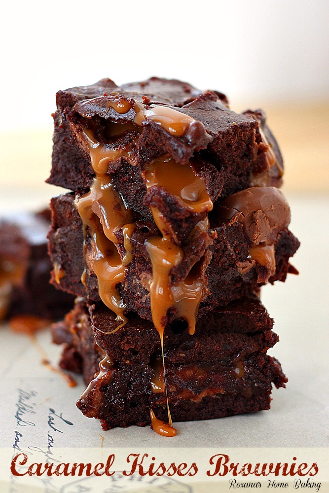

Here we present some of the recipies of Food Network.

Penne Pasta
Make ready 200gms of pasta, 3cups of water, 3 tbsp of oil, 1cup of chopped onion, Prepare 2cup of
tomato puree, Get 1 tbsp of ginger paste. Prepare 1 tbsp of chilli powder. Make ready 1 of capsicum
diced. Get 1/3cup of corn boiled. Take 1 tsp of chilli flakes. Get 1 tsp of oregano. Prepare 1/2 of
cup fresh cream, 1 tbsp of butter as required of Cheese. Get As needed of leaves Basil. Prepare as
per taste of Salt. Take a pan. Add water and let it reach it's boilingpoint. Add little oil and
salt. Now add Marconi to it. Strain the pasta once it is cooked. Now in another pan, add oil. Once
the oil is hot, add the ginger paste. Sauté for a minute or two. Add the onion and cook. When the
onions become translucent, add chilli powder and salt. Now add the tomato puree and and let it cook
for 10 minutes. Now add Marconi to it along with chilli flakes and oregano. Add butter and fresh
cream. Cook for a minute or two. Pink sauce Marconi pasta are ready. Garnish with cheese and basil.
Enjoy this delicious pasta!!!.

Rainbow Orzo Salad
2 peppers , different colours if you like, deseeded and sliced, 1 red onion , cut into thin wedges, 1
tbsp olive oil, 6 cherry tomatoes, halved 25g orzo pasta, 25g feta cheese , crumbled2 tbsp roughly
chopped basil. Heat oven to 200C/180C fan/gas 6. Put the peppers and onion in a roasting tin and
drizzle with half the oil. Roast for 20 mins, adding the tomatoes for the final 5 mins. Leave to
cool. Cook the orzo following pack instructions, then run under cold water to cool before draining
thoroughly. Toss with the vegetables, the remaining oil, the feta and basil. Will keep in the fridge
for a few days.

Caramel Kisses Brownies
1/2 cup (113 grams) room temperature butter, 1 cup (200 grams) packed brown sugar, 2 eggs, 2 tsp
vanilla extract, 3/4 cup (90 grams) all-purpose flour, 3/4 cup (60 grams) unsweetened cocoa powder,
1/2 tsp salt, 1 bag Hershey's caramel kisses (unwrapped), 1 egg. Heat the oven to 350F. Line an 8
inch square pan with parchment paper. In a mixing bowl cream the butter and sugar until light and
fluffy, about 2 minutes. Add the 2 eggs, one at a time, mixing well after each addition. Add the
vanilla extract and mix. Scrape the sides of the bowl. Slowly add the cocoa powder, salt and flour
and stir until just combined.Reserve 3/4 cup. Spread the remaining batter in the prepared pan. Add
the caramel kisses and arrange them on top of the brownie batter. Mix the reserved 3/4 cup brownie
batter with the remaining egg. Pour it over the caramel kisses. Bake the brownies in the preheated
oven for about 35 minutes.Remove from the oven and cool completely before cutting them into bars.